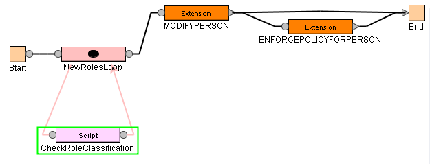
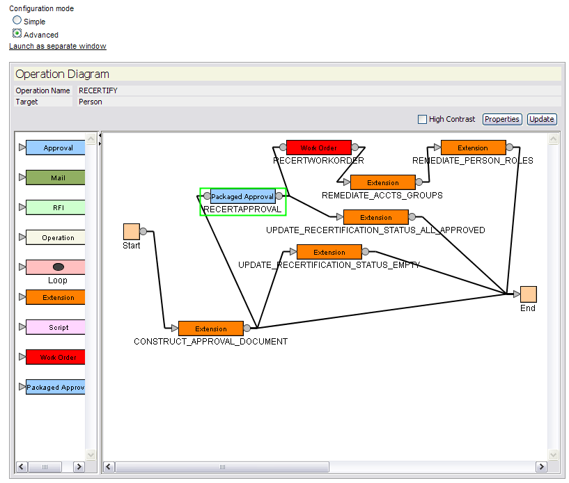
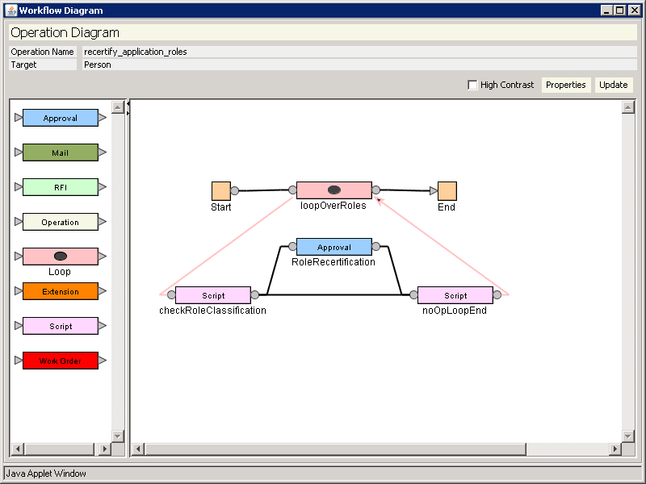
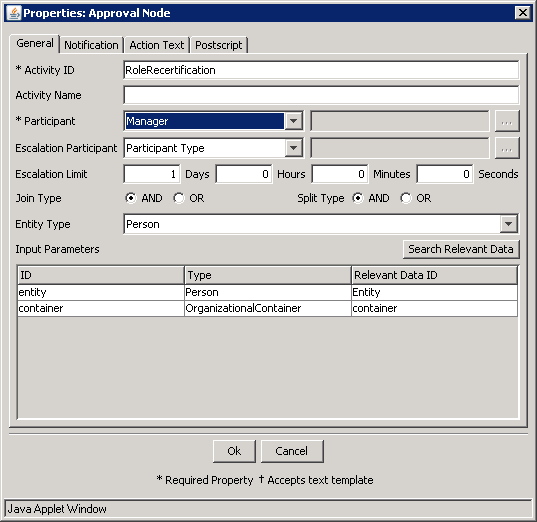
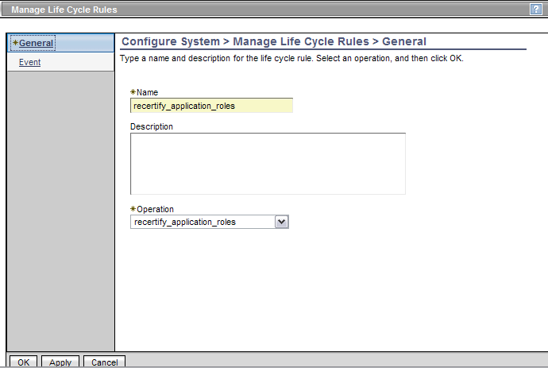

|
|
|

Use of Role Classification
Role Assignment during a Person Create or Modify
In Tivoli Identity Manager 5.1, the role classification can be used in workflow processes. An enterprise may want to do this to specify a different workflow for assignment of roles of different types. For example, assignment to a new business role may require more approvals than assignment to an application role. This document describes how to get started with such an extension by providing a simple example that iterates over the new roles assigned to a person and logging the name and classification for each role.
Customization of the Person Modify Operation
Open the person modify operation in the Tivoli Identity Manager console using the menu options Configure System | Manage Operations | Entity Type Level | Modify. In the workflow designer add a loop with a script node as shown in the diagram below.
Customization of the Person Modify Operation Workflow
The loop condition in the loop node should be
context.getLoopCount() < Entity.get().getNewRoles().length
The script node text should be
var i = context.getLoopCountByID("NewRolesLoop");var role = Entity.get().getNewRoles()[i-1];Enrole.log("script", "i: " + i + ", role name: " + role.getProperty('errolename') + ", classification: " + role.getProperty('erroleclassification'));
This will print out the loop index, the name of the role, and the role description. From this point modifications to the operation can be performed by branching on the value of role classification and adding approval nodes as in other examples.
Role Assignment Recertification
Role
classification can be used to customize the recertification process using the
advanced policy option in the Recertification Policy section of the console
user interface. The area most likely to be customized is the RECERTAPPROVAL packaged approval node,
shown below.
An Example of a Recertification Policy Advanced Option Workflow
If you are creating a new recertification process for role assignments based on role classification then it may be simpler to create a new workflow operation. Suppose that you wanted to have a special recertification process for all application roles. This can be done by creating a lifecycle operation for person described below.
Navigate to
Configure System | Manage Operations and select the entity type level radio
button and the Person entity type in the drop down. Click the Add... button to
bring up the workflow designer. Call the new operation recertify_application_roles. Add a loop node, two
script nodes, and an approval node and connect them as shown below.
Lifecycle Operation for Recertifying Application Roles
Open up the properties dialog by clicking on the Properties button and check the Non-static radio button option. Add 2 new relevant data items:
roleClassificationof type Stringcontainerof type OrganizationalContainer
Click OK to continue.
 Workflow Properties
Workflow Properties
the condition in the loop node should be
context.getLoopCount() < Entity.get().getRoles().length
The script and approval nodes are inside the loop. They will iterate over all the roles a person has. The checkRoleClassification script node should contain the following script. The others should remain empty.
var cn = Entity.get().getProperty('cn'); Enrole.log("script", "person cn: " + cn); var i = context.getLoopCountByID("loopOverRoles"); var role = Entity.get().getRoles()[i-1]; if (role != null) { var roleClassificationProp = role.getProperty('erroleclassification')[0]; if (roleClassificationProp != null) { roleClassification.set(roleClassificationProp); } else {//if classification not set on the role roleClassification.set("undefined"); } Enrole.log("script", "person " + cn + " has role " + role.getProperty('errolename') + " with classification: " + roleClassification.get()); }
This will set a
workflow parameter called roleClassification to the value of the role classification in the Tivoli Identity
Manager data store. The code also logs an informational message.
In the transition from the checkRoleClassification script to the approval node enter the following condition
roleClassification.get() == "role.classification.application"
And in the transition from the checkRoleClassification script to the noOpLoopEnd, enter the following condition
roleClassification.get() != "role.classification.application"
The previous two
scripts will restrict recertification approvals to only those having a role
classification of role.classification.application, which is the value
stored by Tivoli Identity Manager when selecting Application value in the role
management user interface.
In the approval node, set the participant to Manager, and map the input parameters as shown below.
Approval Node Details
Click OK at the bottom of the Manage Operations screen to your new workflow.
Finally, create a life cycle rule to execute the life cycle operation. Go to the menu Configure System | Manage Life Cycle Rules and select the entity type level radio button. Also, select the Person entity type in the drop down.
Life Cycle Event Screenshot
To test it out try creating a role with clasification of Application assigning someone to the owner of the role and assigning a supervisor to the person. If you run the life cycle rule using the run button at the top of the table then you should generate an approval that will be sent to the manager of the person who is a member the role.
Two aspects of this example that would be needed for production use are the text displayed to the approver and recording the recertification results on the role member's profile. The text displayed to the approval workflow participant can be modified in the workflow designer by editing properties of the Approval Node. The recertification results can be persisted on the person being recertified by taking advantage of the dataservices API within a workflow extension. The workflow extension could then be included in the workflow. The Java APIs you would use in the workflow extension to record the recertification are as follows
class: com.ibm.itim.dataservices.model.domain.Person method: setLastRecertificationAction(String roleName, String action); method: setLastRecertificationActionDate(String roleName, Date actionDate)
- See the infocenter reference section called "Application extensions" for more information about creating and installing workflow extensions.
- See the infocenter reference section called "Dataservices attributes for recertification" for more information about dataservices recertification APIs
- See the dataservices examples for more information about using the dataservices API in general.